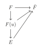
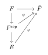
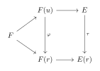
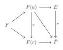

第 3 章：可分扩张与正规扩张
§ 01可分扩张
定义 1.1
域 \(F\)，\(f(x)\in F[x]\) 称为可分多项式(separable polynomial)若 \(f(x)\) 的每个不可约因子在 \(f(x)\) 的分裂域中均无重根。
定义 1.2
域扩张 \(E/F\)，代数元 \(u\in E\) 的极小多项式是可分多项式，则称 \(u\) 是 \(F\) 上的可分元。
定义 1.3
若 \(E/F\) 是代数扩张且 \(E\) 中每个元都是 \(F\) 上的可分元，则称 \(E\) 是 \(F\) 上的可分扩张。
定理 1.4
若 \(E/F\) 是代数扩张，则如下命题等价：
- \(E/F\) 是可分扩张；
- \(E=F(\left\{a_i\right\}_{i\in I})\)，其中 \(a_i\) 是 \(F\) 上的可分元；
- 若 \([E:F]<\infty\)，我们有 \(\left|\mathrm{Hom}_F(E,\bar{F})\right|=[E:F]\)。
证明
\((1)\Longrightarrow(2)\) 是显然的。\((2)\Longrightarrow(3)\) 由推论 1.7即得。
\((3)\Longrightarrow(1)\)：对于代数元 \(u\) 的极小多项式 \(g(x)\)，我们有下图交换：

Fig. 1交换图则
故
即 \(g(x)\) 无重根。
推论 1.5
若 \(E\) 是 \(f(x)\) 的分裂域，则 \(E/F\) 是可分的 \(\Longleftrightarrow\) \(f(x)\) 是可分的 \(\Longleftrightarrow\) \(\mathrm{Aut}_F(E)=[E:F]\)。
命题 1.6
域扩张 \(E/K/F\)，则 \(E/F\) 是可分的当且仅当 \(E/K,K/F\) 是可分的。
证明
“\(\Longrightarrow\)”是显然的。
“\(\Longleftarrow\)”：\(\forall u \in E\)，设 \(u\) 在 \(K\) 上的极小多项式为 \(u^n+k_{n-1}u^{n-1}+\cdots+k_0=0\)。则 \(u\) 在 \(F(k_0,\cdots,k_{n-1})\) 上可分。注意到
故 \(F(u,k_0,\cdots,k_{n-1})\) 是可分的，这表示 \(u\) 是可分的，即 \(E/F\) 是可分的。
定义 1.7
域扩张 \(E/K/F,E/K'/F\)，记 \(K\) 和 \(K'\) 的复合 \(KK'\) 为包含 \(K\) 和 \(K'\) 的 \(E\) 的最小子域。
代数(可分)扩张的复合还是代数(可分)扩张。
我们想知道哪些多项式是可分的。
定义 1.8
设 \(f(x)=a_0+a_1x+\cdots+a_nx^n\in F[x]\)，定义 \(f\) 的导数
当 \(\mathrm{char}F=0\) 时，\(f'(x)=0\Longleftrightarrow f(x)\in F\)；
当 \(\mathrm{char}F=p\) 时，\(f'(x)=0\Longleftrightarrow f(x)=a_0+a_px^p+a_{2p}x^{2p}+\cdots=g(x^p)\)。
定理 1.9
\(f(x)\in F[x]\) 是可分的当且仅当 \((f(x),f'(x))=1\)。
推论 1.10
\(f\in F[x]\) 是首一不可约多项式，则若 \(\mathrm{char}F=0\)，\(f(x)\) 总是可分的；若 \(\mathrm{char}F=p\)，\(f\) 可分当且仅当 \(f(x)\neq g(x^p)\)，\(g(x)\in F[x]\)。
进而特征为零的域都是可分的，下面我们考虑特征为 \(p\) 的域。我们在 \(F\) 上定义 Frobenius 同态：\(\varphi :a\mapsto a^p\)，记 \(F^p=\mathrm{Im}\varphi\)。
引理 1.11
\(x^p-a\) 是可约的当且仅当 \(a\in F^p\)。
证明
若 \(a\in F^p\)，设 \(a=b^p\)，则 \(x^p-a=(x-b)^p\) 可约。
若 \(x^p-a\) 可约，设 \(x^p-a=f(x)g(x)\)，考虑 \(x^p-a\) 的分裂域，则存在 \(b\in E\)，\(b^p=a\)，则 \(x^p-a=(x-b)^p\in E[x]\)，故 \(f(x)=(x-b)^r\in E[x]\)，其中 \(0<r<p\)。则 \(b^r\in F\)，由裴蜀定理我们可以得到 \(b\in F\)，即 \(a\in F^p\)。
定义 1.12
一个域 \(F\) 上任一多项式都是可分多项式，则称 \(F\) 是完全域(complete)。
由推论 1.9我们知道特征为零的域都是完全域。而对于特征为 \(p\) 的域，我们有如下定理：
定理 1.13
\(\mathrm{char} F=p\)，则 \(F\) 是完全域当且仅当 \(F=F^p\)。
证明
“\(\Longrightarrow\)”：若 \(F\) 是完全域，\(\forall a\in F\) 且 \(a\notin F^p\)，考虑 \(f(x)=x^p-a\)，由引理 1.5知 \(f\) 不是可分的，矛盾！故 \(F=F^p\)。
“\(\Longleftarrow\)”：若 \(F=F^p\) 且 \(F\) 不是完全域，取不可分的不可约多项式 \(f\)，由推论 1.9知 \(f(x)=g(x^p)=\sum a_ix^{pi}\)。由于 \(F=F^p\)，\(a_i=b_i^p\)，于是 \(f(x)=(\sum b_ix^i)^p\)，矛盾！
推论 1.14
有限域都是完备的。
证明
由于 \(\varphi\) 是单射，我们有 \(\left|F\right|\le \left|F^p\right|\)，即 \(F=F^p\)。
定义 1.15
域扩张 \(E/F\)，可以证明 \(E\) 中所有 \(F\) 上的可分元构成了 \(E\) 的一个子域，称为 \(F\) 在 \(E\) 中的可分闭包(separable closure)，记为 \(F^\mathrm{sep}\)。
设 \(E/F\) 是代数扩张。若 \(\mathrm{char}F=0\)，显然 \(F^\mathrm{sep}=E\)。
若 \(\mathrm{char}F=p\)，取 \(u\in E\setminus F^\mathrm{sep}\)，设 \(g(x)\) 是 \(u\) 的极小多项式。由推论 1.9我们有 \(g(x)=g_1(x^p)\)，\(g_1(x)\) 是 \(u^p\) 的极小多项式。继续这个过程，若 \(u^p\notin F^\mathrm{sep}\)，我们可以继续构造 \(g_2(x)\) 是 \(u^{p^2}\) 的极小多项式。这个过程最终会停止，即 \(u^{p^n}\in F^\mathrm{sep}\) 对某个 \(n>0\)。
定义 1.16
设 \(E/F\) 是代数扩张，称 \(u\in E\) 是完全不可分的(purely inseparable)，若 \(u^{p^n}\in F\) 对某个 \(n>0\)。\(E/F\) 称为完全不可分的若 \(E\) 中每个元素都完全不可分。
由上面的讨论，\(E/F^\mathrm{sep}\) 是完全不可分的。
设 \(E/F\) 是完全不可分的，取 \(u\in E\setminus F\)，设 \(u\) 在 \(F\) 上的极小多项式为 \(g(x)\)，设 \(n\) 是最小的正整数满足 \(u^{p^n}\in F\)，则 \(u\) 是 \(x^{p^n}-u^{p^n}\in F[x]\) 的根，故 \(g(x)\mid x^{p^n}-u^{p^n}\)。
注意到 \(x^{p^n}-u^{p^n}=(x-u)^{p^n}\)，故 \(g(x)=(x-u)^m=x^m-u^m\) 对某个 \(m\)，这表示 \(u^m\in F\)，进而 \(u^{(m,p^n)}\in F\)，由 \(n\) 的取法知 \(m=p^n\)。
这表示若 \(E/F\) 是完全不可分的且 \(E\neq F\)，则 \(E/F\) 是不可分的。
例 1.17例
\(\mathbb{Z}_p(t^{1/p})/\mathbb{Z}_p(t)\) 是完全不可分的。
定义 1.18
\(E/F\) 是代数扩张，\([F^\mathrm{sep}:F]\) 称作 \(E/F\) 的可分次数(separable degree)，\([E:F^\mathrm{sep}]\) 称作 \(E/F\) 的不可分次数(inseparable degree)。
命题 1.19
设 \(E/F\) 是有限扩张，则 \([E:F^\mathrm{sep}]=p^n\) 对某个 \(n\ge 0\)。特别的，若 \(E/F\) 是完全不可分的，\(F=F^\mathrm{sep}\)，故 \([E:F]=p^n\)。
命题 1.20
若 \(E/K,K/F\) 是完全不可分扩张，则 \(E/F\) 是完全不可分扩张。
证明
对任意 \(u\in E\)，存在 \(m\) 使得 \(u^{p^m}\in K\)，则存在 \(n\) 使得 \((u^{p^m})^{p^n}\in F\)，即 \(u^{p^{m+n}}\in F\)，故 \(u\) 是完全不可分的。
利用可分闭包我们可以推广定理 1.12：
命题 1.21
\(E/F\) 是有限扩张，则
证明
即证对给定的 \(\psi:F^\mathrm{sep}\rightarrow \bar{F}\)，保持 \(F^\mathrm{sep}\) 不变的扩张 \(\varphi:E\rightarrow \bar{F}\) 是唯一的。
取 \(u\in E\setminus F^\mathrm{sep}\)，\(u\) 是 \(x^{p^i}-u^{p^i}\) 的根。故 \(\varphi(u)\) 是 \(x^{p^i}-\varphi(u^{p^i})=x^{p^i}-\psi(u^{p^i})\) 的根。
由于 \(\psi(u^{p^i})\in \bar{F}\)，故存在 \(v\in \bar{F},v^{p^i}=\psi(u^{p^i})\)，则\(x^{p^i}-\psi(u^{p^i})=(x-v)^{p^i}\)，这表明 \(\varphi(x)=v\)。更进一步的，因为 \(v_1^{p^i}-v_2^{p^i}=(v_1-v_2)^{p^i}\)，故 \(v\) 是唯一的。

Fig. 2交换图推论 1.22
若 \(E/F\) 是完全不可分的，则 \(\left|\mathrm{Hom}_F(E,\bar{F})\right|=1\)。
§ 02正规扩张
引理 2.1
\(E/F\) 是 \(f(x)\in F[x]\) 的分裂域，\(u\in E\)，\(g(x)\) 是 \(u\) 的极小多项式，则 \(g(x)\) 在 \(E\) 上可分。
证明
设 \(K\) 是 \(g(x)\) 在 \(E\) 上的分裂域，\(r\in K\) 是 \(g(x)\) 的一个根。我们有下图交换：

Fig. 3交换图这里 \(\varphi:F(u)\rightarrow F(r),u\mapsto r\) 是同构，注意到 \(E\) 是 \(f(x)\) 在 \(F(u)[x]\) 上的分裂域，\(E(r)\) 是 \(\varphi(f(x))\in F(r)[x]\) 的分裂域，故由定理 1.11存在同构 \(\tau:E\rightarrow E(r)\)。故 \(E(r)\cong E\)，即 \(r\in E\)。
我们将分裂域推广：
定义 2.2
\(E/F\) 是代数扩张，\(E/F\) 称作正规扩张，若 \(F\) 上任意不可约多项式在 \(E\) 中或者无根或者根都在 \(E\) 中，则称 \(E\) 是 \(F\) 的正规扩张。
由引理 1.6我们知道所有的分裂域都是正规的。
定理 2.3
\(E/F\) 是代数扩张，则如下命题等价：
- \(E/F\) 是正规的；
- 对任意 \(\tau \in \mathrm{Hom}_F(E,\bar{F})\)，\(\tau(E)=E\)；
- 嵌入映射 \(\mathrm{End}_F(E)\rightarrow \mathrm{Hom}_F(E,\bar{F})\) 是一一对应的。
证明
\((2)\Longleftrightarrow(3)\) 是显然的。
\((1)\Longrightarrow(2)\)：设 \(u\in E\) 的极小多项式为 \(g(x)\)，则 \(\tau(g(u))=g(\tau(u))=0\)，故 \(\tau(u)\) 是 \(g(x)\) 的根。由于 \(E/F\) 是正规的，故 \(\tau(u)\in E\)，进而 \(\tau(E)\subset E\)，即 \(\tau\in \mathrm{Hom}(E/F)\)。由于 \(E/F\) 是代数的，由命题 1.3知 \(\tau\in \mathrm{Aut}(E/F)\)，即 \(\tau(E)=E\)。
\((2)\Longrightarrow(1)\)：设 \(u\in E\) 的极小多项式为 \(g(x)\)，设 \(r\) 是 \(g(x)\) 的另外一根。我们有下图交换：

Fig. 4交换图这里 \(\varphi\) 是同引理 1.6定义的同构，由于 \(E\) 是 \(F(u)\) 的代数扩张且 \(\bar{F}\) 是 \(F(u)\) 的代数闭包故 \(\tau\) 存在。于是 \(\tau(u)=\varphi(u)=r\in E\)，这表示 \(g(x)\) 在 \(E\) 上分裂，即 \(E/F\) 是正规的。
推论 2.4
- \(E/K/F\) 是域扩张，若 \(E/F\) 是正规扩张，则 \(E/K\) 也是正规扩张。
- \(E/K/F,E/K'/F\) 是域扩张，\(K/F,K'/F\) 是正规扩张，则 \(KK'/F\) 也是正规扩张。
证明
\((1)\)：由于 \(E/F\) 是正规的，由上定理对任意 \(\tau\in \mathrm{Hom}_F(E,\bar{F}),\tau(E)=E\)。因为 \(\mathrm{Hom}_K(E,\bar{F})\subset \mathrm{Hom}_F(E,\bar{F})\)，再次利用上定理，\(E/K\) 是正规的。
\((2)\)：注意到任意 \(\tau\in \mathrm{Hom}_F(KK',\bar{F}),\tau\subset \mathrm{Hom}_F(K,\bar{F})\cap\mathrm{Hom}_F(K',\bar{F})\)，故 \(\tau(K')=K'\)，进而 \(\tau(KK')=KK'\)，这表示 \(KK'\) 是正规的。
定理 2.5
- 一个有限扩张 \(E/F\) 是正规的当且仅当 \(E\) 是一个分裂域。
- 任一有限扩张被包含于一个正规扩张。
证明
\((1)\)：“\(\Longleftarrow\)”由引理 1.6直接得出。“\(\Longrightarrow\)”：设 \(E=F(u_1,\cdots,u_n)\)，\(u_i\) 的极小多项式是 \(g_i(x)\)，则 \(E\) 是 \(g_1(x)\cdots g_n(x)\) 的分裂域。
\((2)\)：设 \(E=F(u_1,\cdots,u_n)\)，则 \(E\) 被 \(g_1(x)\cdots g_n(x)\) 的分裂域包含，它是正规的。
定义 2.6
\(K/E/F\) 是代数扩张，称 \(K\) 是 \(E/F\) 的正规闭包，若：
- \(K/F\) 是正规的。
- 若 \(K/M/E\) 是域扩张且 \(M/F\) 是正规的，则 \(K=M\)。
命题 2.7
若 \(E/F\) 是有限扩张，设 \(E=F(u_1,\cdots,u_n)\)，\(u_i\) 的极小多项式是 \(g_i(x)\)，则 \(E/F\) 的正规闭包为 \(g_1(x)\cdots g_n(x)\) 的分裂域并且在 \(F\)-同构意义下是唯一的。
例 2.8例
\(\mathbb{Q}(\sqrt2)/\mathbb{Q},\mathbb{Q}(\sqrt[4]2)/\mathbb{Q}(\sqrt2)\) 是正规的，但是 \(\mathbb{Q}(\sqrt[4]2)/\mathbb{Q}\) 不是正规的，因为 \(x^4-2\) 在 \(\mathbb{Q}\) 中不可约，\(x^4-2\) 在 \(\mathbb{Q}(\sqrt[4]2)\) 中有根但是不可分。由命题 1.8知 \(\mathbb{Q}(\sqrt[4]2)/\mathbb{Q}\) 的正规闭包是 \(\mathbb{Q}(\sqrt[4]2,\sqrt{-1})\)
例 2.9例
\(\mathbb{Q}(\sqrt[3]2,\omega)/\mathbb{Q}\) 是 \(x^3-2\) 的分裂域，它是正规扩张，但是 \(\mathbb{Q}(\sqrt[3]2)/\mathbb{Q}\) 不是正规的，因为 \(x^3-2\) 在其中有根但是不可分。
由上两例我们知道，域扩张 \(E/K/F\)，若 \(E/F\) 是正规的，\(K/F\) 不一定是正规的；若 \(E/K,K/F\) 是正规的，\(E/F\) 也不一定是正规的。这与正规子群的概念相似。我们将在后文中讲述这种相似的原因。
定义 2.10
\(E/F\) 是有限正规域扩张，\(E/K/F\) 是域扩张，则 \(K/F\) 是正规的当且仅当 \(\forall \sigma \in \mathrm{Aut}(E/F),\sigma(K)=K\)。
证明
证明同定理 1.15。
评论